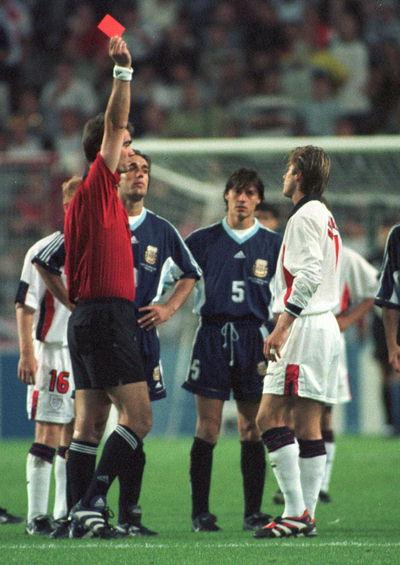
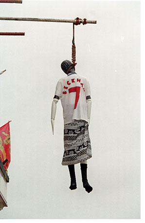

Chương Bảy

au chức vô địch năm 1997, Eric Cantona quyết định treo giày ở độ tuổi 31. Để thay thế ông, Manchester United đưa về tiền đạo kỳ cựu Teddy Sheringham. Đang nghỉ hè ở Malta, David Beckham nhận được điện thoại từ Sir Alex Ferguson, thông báo cho biết Sheringham sẽ thay anh mang áo số 10. Sir chỉ báo cụt ngủn như thế rồi thôi, không nói gì thêm, khiến David vô cùng hụt hẫng.
-Thầy làm vậy để chi? – David than phiền với Gary Neville – Hủy hoại cả kỳ nghỉ của người ta!
Về đến Old Trafford, David mới biết mình sẽ được tiếp quản chiếc áo số 7[1]. Mọi nỗi thất vọng liền tan biến ngay. Số 10 đẹp thật, nhưng với United, số 7, số áo của George Best, Bryan Robson, và Eric Cantona, mới thực là huyền thoại.
Tuy nhiên, mùa bóng đầu tiên David mang áo số 7 lại là một mùa đầy thất vọng. Anh vẫn thi đấu tốt, đạt phong độ cao, song không thể giúp đội nhà bảo vệ danh hiệu quán quân. Cantona ra đi, để lại khoảng trống quá lớn, không thể lấp đầy trong một sớm một chiều. Bên cạnh đó, đội trưởng Roy Keane lại chấn thương nặng, phải nghỉ gần suốt mùa. Manchester United xảy chân trong những vòng đấu cuối cùng, đành chỉ về đích hạng nhì, với một điểm ít hơn Arsenal. Trắng tay trên mặt trận CLB, mọi hy vọng của David giờ đây đổ dồn vào mặt trận quốc gia, vào World Cup 1998 tổ chức tại Pháp.
Tuy giỏi chuyên môn, HLV ĐTQG Anh Glenn Hoddle kém về mặt “đắc nhân tâm”. Trước ngày ra trận, ông bắt tất cả các cầu thủ dự tuyển tập trung, rồi ngồi chễm chệ trong phòng, lần lượt cho gọi từng người vào để thông báo quyết định chọn hay loại họ khỏi danh sách đi Pháp. Thật là một cảnh khôi hài: Các cầu thủ đứng ngồi la liệt ngoài hành lang, vừa căng thẳng không biết có được chọn hay không, vừa khó chịu vì bị đối xử thiếu tôn trọng.
Một trong những người căng thẳng nhất là Paul Gascoigne. 8 năm trước, giữa mùa hè nóng bỏng Italy, những bước chạy thiên tài của Gazza đã nâng cánh tuyển Anh, đưa Tam Sư đến ngôi hạng tư thế giới. Kể từ đó, Gascoigne tự hủy mình với lối sống bê tha, trụy lạc, nhưng trong những trận vòng loại World Cup gần đây, anh đã thể hiện lại phần nào phong độ ngày xưa. Dù vậy, Hoddle vẫn không tin tưởng lắm vào Gascoigne, và bản thân Gascoigne cũng dự cảm được điều không hay sẽ đến.
“Chú biết gì không?”, Gascoigne chia sẻ cùng David trước ngày lên danh sách, “Anh thích chú lắm. Chú vừa trẻ vừa có tài. Anh rất muốn được dự World Cup cùng chú kỳ này.”
Khi biết mình bị loại, Gazza nổi cơn điên loạn, vừa khóc vừa la, điên cuồng đập phá đồ đạc. Trong các cầu thủ Thế Hệ 92, Beckham, Scholes, và Gary Neville được chọn, còn Phil Neville cùng Nicky Butt phải ngồi nhà. Butt lẫn Neville đều còn trẻ, tương lai còn dài trước mắt, mọi người chỉ buồn và tiếc cho Gascoigne mất đi cơ hội cuối cùng để tỏa sáng trong ngày hội túc cầu lớn nhất hành tinh. Đội Anh lên đường sang Pháp trong không khí vô cùng trầm lắng.
Riêng với David Beckham, mọi chuyện ngày càng xấu đi. Cũng như Sir Alex Ferguson, Glenn Hoddle bắt đầu khó chịu khi thấy David giành quá nhiều thời gian cho Victoria. Ông quyết định loại anh ra khỏi đội hình chính thức trong trận mở màn tại World Cup gặp Tunisia. Điều lạ lùng là loại David, nhưng ông lại gọi anh vào cùng trả lời trong buổi họp báo trước trận đấu. Tâm trạng rối bời, David dù cố gắng đến mấy cũng không giấu được nỗi buồn trước mặt báo giới. “Beckham sao thế nhỉ?”, cánh nhà báo hỏi nhau, “Hay là không được đá chính? Có lẽ nào?”
Quá thất vọng, David quyết định đến gặp trực tiếp Hoddle:
-Em cần nói chuyện với thầy. Tại sao thầy loại em? Xin cho em biết lý do.
-Tại sao à? Tôi nghĩ cậu thiếu tập trung.
-Sao thầy có thể nghĩ như thế? Sao em lại có thể thiếu tập trung trước giải đấu lớn như thế này? Em tập trung hoàn toàn, em không nghĩ về bất cứ thứ gì khác.
-Thiếu tập trung là thiếu tập trung. Đơn giản thế thôi.
Hoddle nhún vai, bỏ đi.
Không gì thay đổi được quyết định của HLV. Beckham không được ra sân trận gặp Tunisia, và tiếp tục phải ngồi dự bị trận gặp Romania. May cho David, trận này, Paul Ince bị chấn thương phải sớm ra nghỉ, anh được vào thay thế. “Thần đồng” 18 tuổi Michael Owen cũng được vào thay người và ghi bàn lập công, song kết quả cuối cùng là Anh thua Romania 1 – 2. Muốn vào vòng trong, Anh cần ít nhất một điểm ở trận cuối gặp Colombia.
Có tên trong danh sách ra quân trước Colombia, David quyết tâm chứng tỏ Hoddle đã sai khi bỏ rơi mình trước đó. Ngày trước trận đấu, giữa cái nắng đổ lửa, anh ra sân một mình, luyện sút phạt suốt 2 giờ liền. Công khổ luyện được đền đáp một cách ngọt ngào. Tam Sư thắng thuyết phục Colombia 2 – 0, bàn ấn định được ghi từ cú đá phạt trực tiếp mẫu mực của David, đưa bóng đi hình vòng cung, vượt khỏi tầm với thủ môn. Lần đầu ghi bàn cho đội tuyển quốc gia (ĐTQG), lại ghi trong khuôn khổ World Cup, nhưng David không cảm thấy niềm vui trọn vẹn. Quan hệ giữa anh và Hoddle không bao giờ có thể trở lại như ngày xưa.
Đứng nhì bảng G, Anh chạm trán đội nhất bảng H, Argentina, ở vòng 1/16. Giữa Anh và Argentina có mối thù truyền kiếp, khởi nguồn từ World Cup 1966, khi HLV Anh, Alf Ramsey, mắng các cầu thủ Argentina là “lũ súc vật”. Sau cuộc chiến giữa hai nước nhằm tranh giành quần đảo Falkland (Malvinas) năm 1982[2], hận thù càng chất chồng. Trên đất Mexico năm 1986, Argentina tiễn Anh về nước bằng hai khoảnh khắc để đời của “Cậu Bé Vàng” Diego Maradona: Khoảnh khắc “quỷ dữ “ với “Bàn Tay Của Chúa”, và khoảnh khắc “thiên thần”, với qua đi bóng xảo diệu, đẹp đến mê hồn, vượt qua toàn bộ hàng thủ đối phương. Gặp nhau lần này, cả nước Anh cùng lúc sục sôi, đòi hỏi đội tuyển bằng mọi giá phải trả hờn rửa hận.
Anh – Argentina có lẽ là trận cầu hấp dẫn nhất France 1998. Ngay đầu trận, siêu tiền đạo Gabriel Batistuta đã đưa Argentina vượt lên dẫn trước trên chấm phạt đền. Anh nhanh chóng gỡ hòa do công Alan Shearer, cũng từ chấm 11m. Phút 16, SVĐ như nổ tung, khi Michael Owen dẫn bóng thần tốc, chạy suốt gần nửa chiều dài sân, lừa qua hai cầu thủ Argentina để nâng tỷ số. Trước lúc hiệp một kết thúc, Javier Zanetti nhận bóng sau pha phối hợp đá phạt tinh tế, gỡ hòa hai đều.
Phút 47 của trận đấu là phút định mệnh cho David Beckham. Bị Diego Simeone phạm lỗi, anh té lăn ra sân. Simeone giả vờ đưa tay xoa đầu David xin lỗi, thật sự là nắm tóc anh kéo mạnh. Giận quá mất khôn, David thò chân “khoèo” Simeone một cái. Cú “khoèo” nhẹ hều, song tiền vệ Argentina ngã lăn đùng như bị chặt mất chân. Trọng tài liền rút ngay thẻ đỏ.
“Trọng tài bị tôi bẫy đấy”, Simeone sau này thừa nhận, “Tôi ngã khéo như thế, mà tình hình lúc ấy căng thẳng như thế, ông ấy phải phạt thôi. Nhờ pha ngã của tôi mà thẻ vàng biến ra thẻ đỏ. Thật ra, Beckham có bạo lực gì đâu, chỉ là một cú đá nhẹ, chả có lực gì.”
Như người mất hồn, David lủi thủi rời sân. Nhân viên mát xa Terry Byrne chạy đến, ôm lấy anh, đưa vào phòng thay đồ, ở lại cùng bên cho đến khi anh bình tĩnh hơn một chút và đi tắm. David nhớ mãi cử chỉ chân tình của Byrne. Anh vốn đã thân với Byrne, nay lại càng thân hơn. Về sau, Byrne trở thành trợ lý tín cẩn của David…
Đang tắm dở, David tông cửa, nhảy bật ra, khi nghe có người vào thông báo:
-Vào rồi, Sol Campbell ghi bàn!
Nhưng…tẽn tò! Bàn thắng không được công nhận, bởi trước khi Sol Campbell đánh đầu ghi bàn, một cầu thủ Anh đã phạm lỗi với đối phương. Kết thúc 120 phút, không bàn thắng nào được ghi thêm. Anh một lần nữa thúc thủ trước Argentina, lần này sau những quả penalty luân lưu nghiệt ngã. Họp báo sau trận đấu, HLV Glenn Hoddle phát biểu: Nếu còn đủ 11 người, chúng tôi đã không thua.
Gặp đồng đội trong phòng thay đồ, David nghẹn lời. “Em xin lỗi”, anh lí nhí nói với thủ quân Alan Shearer. Shearer không đáp lời nào, thẫn thờ đứng nhìn vào khoảng không. Chỉ có Tony Adams tiến tới, choàng vai đàn em:
-Dù thế nào đi nữa, em vẫn là một thanh niên tốt, một cầu thủ trẻ đầy triển vọng. Anh tự hào được sát cánh cùng em trong màu áo ĐTQG. Cú vấp này sẽ khiến em mạnh mẽ thêm lên.

Beckham nhận thẻ đỏ trận gặp Argentina (Ảnh: Rankopedia)
Chẳng lời nào có thể an ủi được David. Anh bật lên khóc, khóc nức nở, khóc như chưa được khóc bao giờ. Ông bà Ted, rồi Gary Neville ra sức động viên David, nhưng vô hiệu. Victoria! Phải rồi! Chỉ có Victoria! Victoria đang lưu diễn ở Mỹ, anh phải bay ngay sang đó. Anh đang cần vòng tay Victoria. Chỉ Victoria có thể là chiếc cầu bắc qua nhánh sông phiền muộn, xua tan những nỗi đau. Vả lại, chính Victoria cũng đang cần anh. Trước trận gặp Argentina, cô vừa nhắn cho anh biết mình đã mang thai.
David không biết rằng, cùng lúc ấy, báo giới Anh Quốc đang rục rịch chuẩn bị chiến dịch “đấu tố” anh, một chiến dịch “đấu tố” lớn nhất, dài nhất, dữ dội nhất trong suốt chiều dài lịch sử nền bóng tròn xứ sở sương mù. Đội tuyển thất bại, ắt có tội đồ, và tội đồ không ai khác phải là David Beckham. Dù cho Simeone có đóng kịch, cũng không thể chối việc Beckham đã “khoèo” chân. Không có lửa, làm thế nào có khói?
Biết được lịch trình của David: Từ Pháp đi về nước, nghỉ ngơi luôn tại phi trường Heathrow vài tiếng rồi bay sang Mỹ, cánh báo chí không đến nhà anh, mà kéo quân phục kích nhà ông bà Ted. Vừa 7 giờ sáng, ông Ted bị đánh thức bởi tiếng đập cửa ầm ầm. Nhìn ra, ông hoảng hốt nhận thấy con phố đầy ắp những người: Ít ra có đến ba đội quay truyền hình, 30 tay nhiếp ảnh, còn phóng viên thường thì nhiều không đếm xuể. Ông mở cửa nói vội “Miễn bình luận, chúng tôi không có gì để nói”, đoạn quay trở vào trong. Hai ông bà cuống quít, không biết phải xoay sở thế nào.
Sáng hôm đó, bà Sandra có hẹn đến cắt tóc cho khách và đi thăm bạn. Tình hình thế này, bà đành gọi điện thoại, báo mình không đến được. Không dè, chỉ 20 phút sau, cả người khách lẫn người bạn đều gọi lại, hỏi bà có tiết lộ số của họ cho ai khác biết không, mà sao phóng viên liên tục gọi đến nhà họ, hỏi đủ thứ chuyện! Té ra, bọn nhà báo bên ngoài đã đặt hệ thống theo dõi, bên trong gọi cho ai, đến số nào, họ nắm được cả! Suốt một tuần sau đó, ngôi nhà bị “bao vây”, theo dõi sát sao 24/24.
Tại sân bay, David không khá khẩm gì hơn. Ký gửi hành lý, đi qua hải quan rồi, tưởng rằng đã thoát, song không biết làm sao mà nhà báo cũng qua được mặt hải quan, kéo vào nườm nượp. Họ bu lấy anh như đàn ruồi, tranh nhau hỏi như ăn cướp:
-Anh có nghĩ mình đã phụ lòng mọi người không, David?
-Anh có nhận thức được việc mình làm không? Có phải như thế là mất thể diện quốc gia?
-Anh đi đâu đấy, bỏ nước mà đi à?
…
Đến New York, David không tin vào mắt mình: Vẫn là hàng hàng lớp lớp nhà báo. Anh chui vào taxi thì họ giữ cửa lại không cho đóng. Khó khăn lắm mới đẩy được anh nhà báo, đóng được cửa bên này, thì cửa bên kia lại bật tung, một cô phóng viên khác chui tọt vô! Còn tệ hơn ở Anh! David quên mất mình đã trở thành một nhân vật của showbiz. Ở Mỹ hay Anh cũng vậy thôi. Dân Mỹ không xem bóng đá, song cũng rất quan tâm đến anh chàng cầu thủ, bồ của Posh Spice.
Từ sân bay, David đi thẳng đến Madison Square Garden, nơi Spice Girls đang biểu diễn. Vì vội vàng không báo trước, đến nơi, anh cứ đứng lớ ngớ, không biết làm sao để vào, may mà gặp người quen bước ra, dắt vào hậu trường. Đang đi giữa chừng thì gặp Victoria, song David lúc đó mặc áo khoác to xù, lại kéo mũ sùm sụp, che gần nửa mặt, nên Victoria không nhận ra người yêu, cứ thế xăm xăm bước qua.
Tuy thế, như có linh tính, bước được vài bước, Victoria quay đầu, David bỏ mũ xuống. Hai người chạy xô lại, ôm lấy nhau, nghẹn ngào. Rồi họ rút vào một căn phòng nhỏ, và Victoria cho David xem phim siêu âm bào thai mới thành hình. David cảm thấy trong lòng nhẹ nhõm hẳn: Bóng đá ư? Dù sao cũng chỉ là cuộc chơi, còn đây là người mình yêu, là giọt máu của chính mình, đây mới là cuộc đời thật! Suốt những ngày sau đó, anh tạm quên những đắng cay, theo chân Spice Girls từ thành phố này đến thành phố khác.
Nói là tạm quên, tức không quên hẳn, bởi mỗi lần cầm tờ báo, đọc những tin từ Anh, David không khỏi đau lòng. Ở Mỹ tuy cũng bị theo đuổi phiền toái, nhưng chỉ thế thôi: Nước Anh đá bóng thua thì liên quan gì đến chú Sam? Còn ở Anh, người ta bêu riếu David như một tội đồ dân tộc, chửi rủa đã thì hăm dọa giết chết. David không lạ gì sự hăm dọa của những kẻ ghen ăn tức ở. Hồi mới quen Victoria, anh đã nhận được lá thư trong có 2 viên đạn chì, với lời chú thích: Một giành cho anh, một giành cho Posh. Khi ấy, những chuyện như thế chỉ là lẻ tẻ, không đáng kể, nay thì nó trở thành một phong trào. Tờ Daily Mirror chạy tít “10 Sư Tử Oai Hùng, Một Thằng Ngu Xuẩn”, rồi cho in hình David giữa cái hồng tâm, cho thiên hạ ném phi tiêu, trong khi Website Football365 hô hào “Nghĩa Vụ Chúng Ta Là Phải Tố Nó (Beckham)”. Một tay nhà báo nào đó còn lên tiếng kêu gọi loại vĩnh viễn David khỏi ĐTQG.
Nhiều người dân hưởng ứng lời kêu gọi của báo chí. Anh hàng thịt ở Islington trưng hai cái thủ lợn to tướng ngay trước cửa hàng, ghi chú bên dưới là David và Victoria. Ông chủ quán Pleasant Pheasant làm hình nộm David, đem…treo cổ lên. Tay chủ tiệm rượu Horse & Groom còn tiến xa hơn, đâm đơn kiện David ra tòa, bởi tại David mà tuyển Anh bị loại, và bởi tuyển Anh bị loại nên ít khách đến uống rượu, làm tiệm hắn thất thu! Ngay đến ông bà Ted, do là cha mẹ “tội đồ”, cũng bị đe dọa hành hung. Chính quyền phải điều cảnh sát đến bảo vệ họ.
Beckham bị đả kích dữ dội, thật ra không phải một việc quá ngạc nhiên. Nên nhớ, nước Anh vốn là tổ của hooligan. Hooligan làm việc gì cũng cực đoan, khi người ta thành công thì nâng lên chín tầng mây, mà lúc thất bại thì dìm xuống mười tầng địa ngục. Hơn nữa, David còn mắc cái tội là quá…nổi tiếng. Anh càng nổi bao nhiêu, càng lên cao bao nhiêu, càng có nhiều người ganh ghét. Bình thời, những người này chỉ đành ôm hận, nhưng chỉ cần anh sảy chân một chút, họ sẽ chớp thời cơ xả hận ra, đánh ngay không thương tiếc. Sau này, Phil Neville tại Euro 2000, David Seaman tại World Cup 2002 cũng đều bị “đấu tố”, song hai người không nổi như Beckham, nên sự tố nhẹ nhàng hơn rất nhiều.
Giữa muôn trùng áp lực, đã có những tin đồn David sẽ bán xới, chạy khỏi nước Anh, sang Tây Ban Nha đá cho Real Madrid. Nhưng thời điểm ấy chưa tới: Tình yêu David giành cho United vẫn quá lớn, và mâu thuẫn giữa anh và Sir Alex Ferguson chưa lên đến cao trào.
“Hãy về Manchester”, Sir Alex gọi cho David, “Về đây, nơi mọi người luôn thương yêu và ủng hộ con. Đừng thèm nghe ai nói gì. Khi mùa giải mới bắt đầu, con sẽ có câu trả lời đích đáng cho chúng nó.”

Hình nộm Beckham mặc váy, bị treo cổ (Ảnh: The republikcofmancunia)
Chú thích:
[1] Trong màu áo United, Beckham lần lượt mang các số sau đây: 14, 10, 28, 24, 10, và 7.
[2] Cuộc chiến kéo dài 74 ngày, với phần thắng thuộc về Anh. 649 binh sỹ Argentina tử trận, phía Anh mất 255 người.